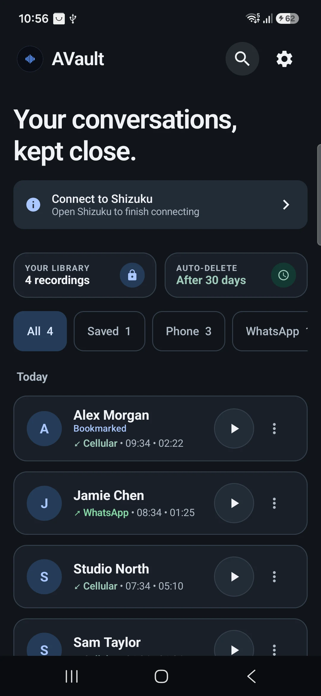
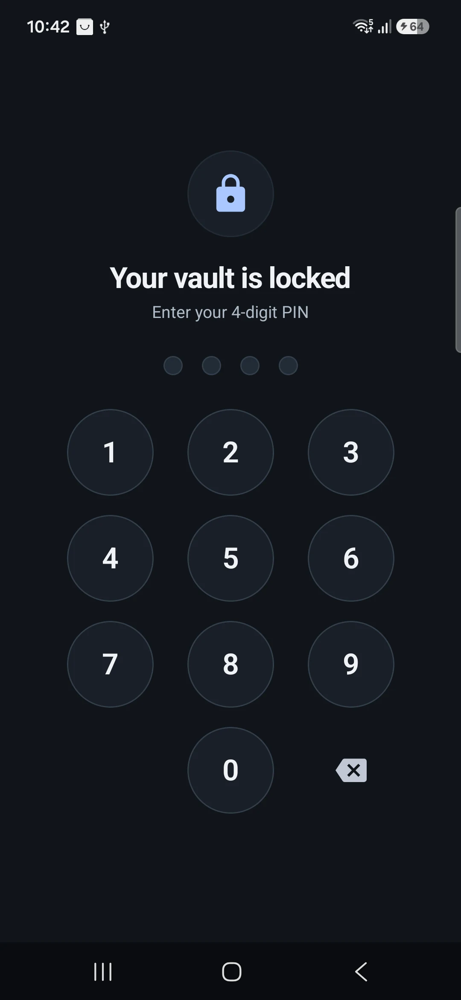

Найдите нужный момент.
Ищите по контакту, номеру или приложению. Фильтры помогут сразу перейти к нужной записи.
ОТКРЫТЫЙ КОД. ВАШИ ПРАВИЛА.
Некоторые разговоры стоит сохранить.
Найдите для них личное место на вашем Android.
Бесплатно · Android 11+ · Требуется Shizuku

Чуть больше конфиденциальности.
Гораздо больше спокойствия.
01 — МЕСТО ДЛЯ ВАШИХ РАЗГОВОРОВ
От полезной детали до важного решения: находите нужный разговор, не перебирая папки с аудиофайлами.
Ищите по контакту, номеру или приложению. Фильтры помогут сразу перейти к нужной записи.
Добавьте запись в закладки, чтобы исключить её из автоматической очистки. Для остальных установите удобный срок хранения.
Слушайте записи прямо в хранилище с удобным управлением воспроизведением. Делитесь аудиокопией, когда сами решите.
02 — КОНФИДЕНЦИАЛЬНОСТЬ В ДЕТАЛЯХ
AVault объединяет зашифрованное аудио и контроль доступа. Код открыт: вы можете проверить, что стоит за обещаниями.
Подробнее о безопасностиПри включённом шифровании аудио защищено AES-256-GCM. Ключами управляет Android Keystore.
Защитите доступ PIN-кодом приложения или поддерживаемой биометрией. Защиту содержимого экрана можно включить в настройках.
Аппаратная защита ключей зависит от устройства. Для воспроизведения и отправки используются временные расшифрованные файлы. Защищайте и само устройство.

ДЛЯ РАБОТЫ, КОТОРУЮ ВАЖНО ПОМНИТЬ
Удобный источник деталей из бесед с клиентами, интервью и обсуждений проектов, записанных с разрешения. Сосредоточьтесь на разговоре сейчас, а к подробностям вернитесь позже.
Развивается открыто520 звёзд на GitHub · GPL-3.0-or-later
03 — УСТРАИВАЙТЕСЬ ПОУДОБНЕЕ
AVault использует Shizuku для подключения к системным службам Android без root-прав. Настройте соединение и сделайте хранилище своим.
Скачайте APK из GitHub Releases и установите его на телефон Android.
Открыть релизыУстановите Shizuku, запустите его через беспроводную отладку или ADB и разрешите доступ для AVault.
Настройка ShizukuПройдите список разрешений в приложении. Выберите правила записи, блокировку и сроки хранения.
Руководство по настройкеО совместимости. Приложение устанавливается на Android 11 и новее. Возможность записи зависит от телефона, версии Android и приложения для звонков. После перезагрузки может потребоваться повторный запуск Shizuku. Проверьте настройки тестовой записью.
Да. AVault бесплатен, а его исходный код доступен по GNU General Public License v3 или более поздней версии. Вы можете изучить реализацию и участвовать в разработке на GitHub.
Нет. AVault использует Shizuku для доступа к системным службам, необходимым для записи. При настройке нужно запустить Shizuku и предоставить необходимые разрешения.
Поддержка записи зависит от производителя, версии Android и приложения для звонков. Сторонние приложения могут ограничивать запись. Сделайте тестовую запись, чтобы проверить свою конфигурацию.
При отправке зашифрованной записи создаётся расшифрованная аудиокопия для выбранного приложения. Эта копия уже не защищена вашим хранилищем. Отправляйте записи только туда, где им доверяете.
Да. Включите автоматическое удаление и выберите срок в настройках. Записи в закладках исключаются из автоматической очистки. Автоматическое удаление можно оставить выключенным.
ВАШЕ — СОХРАНЯЙТЕ.
Бесплатно. С открытым кодом. Готово, когда вы готовы.